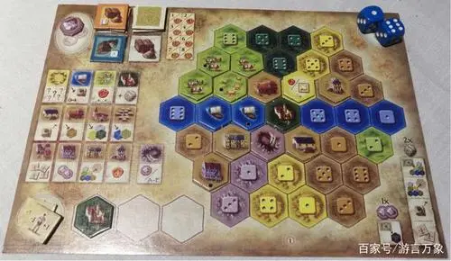
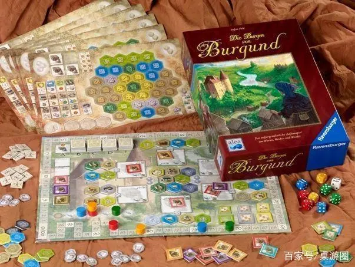
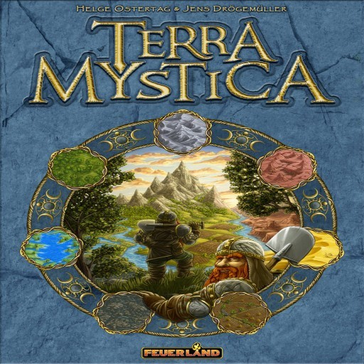
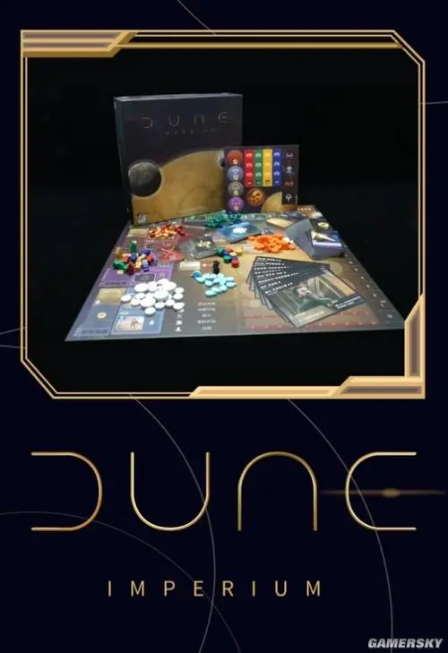

-
 在《勃艮第城堡》这款桌游里，玩家有机会尝试成为历史的一部分。玩家在游戏中是一名勃艮第地区的贵族，一开始的时候麾下统治着通过继承或者是功勋获得的一小块领地。在游戏中玩家的目标是在河的两岸建立尽可能多的定居点和坚固的城堡、沿着河流进行必要的贸易、开采银矿以及利用旅游者们的知识去加强自己领地的建设。作为骰驱德式中的翘楚，这款游戏对骰子的运用极为精妙。玩家做的所有行动都与骰子有关。玩家可以拿取的建筑会根据骰子的点数来决定。玩家可以售卖的货物由骰子来决定。玩家可以建筑的位置也由骰子来决定。骰子在这个游戏里可谓时无处不在。但尽管如此，玩家却并非完全被骰子牵着鼻子走。
-
《神秘大地》是一款策略向的桌面游戏，在这个幻想世界中，有着14个种族，他们或彼此独立或联合，玩家需要做的就是不断提高己方的实力，并与其他种族做战斗，以获取到他们的魔力以及领土，而玩家在游戏的过程中，要懂得巧妙地利用资源，通过地形的优势，来确保自己的阵营处于胜势的地位。 《神秘大地》的原理并不复杂，且很少涉及运气成分：你操控 14 个种族之一，试图改造游戏版面上的地形，以建造你的建筑。与其他玩家距离接近一方面会限制你进一步扩张的选择，但另一方面，在游戏中这也会带来一些好处。这种矛盾也正是 《神秘大地》趣味的来源。 建筑物可以升级，以提供更多的资源，如工人、祭司、金币和魔力。建造神庙，在火、土、水、风四个方面获取更多的影响力。建立你的要塞以激活你的团队的特殊能力。扩展并建造新的住宅，以掌握大量的工人，或者通过建立贸易站确保有恒定的金币流。 14 个巧妙设计的种族，每个都有独特的特殊能力，加上可交换的奖励卡，为游戏提供了大量的可能性，不断保持游戏娱乐性！
-
电影《沙丘》的改编桌游，作为一款ip桌游，其质量完全超出预期：精美的配件，完美的收纳（需另外购买），扎实的游戏性，还原原作的画风让它在我心里成为了一款几近完美的桌游，目前BGG排名18也实至名归。 四位玩家扮演剧中的各个家族，通过派遣特使，雇佣人物，召集士兵来争夺香料、金钱和士兵，通过战争，声望和各种手段来提升胜利点，最终达到10个胜利点的玩家获胜。游戏过程非常紧凑，内容丰富规则却不复杂，卡牌多样，重开性拉满，很好地还原了小说电影中各大家族的明争暗斗a！